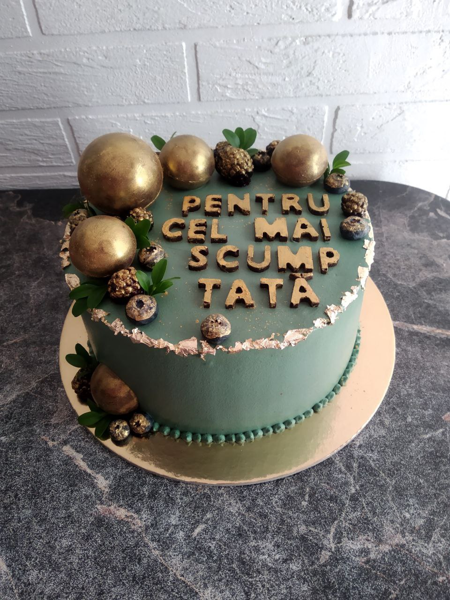

Ingrediente și Descriere
Acest tort cu caramel combină dulceața caramelului cu o textură fină și cremoasă. Perfect pentru cei ce adoră gusturile bogate și deserturile rafinate!
Ingrediente:
- Caramel fin
- Făină de calitate
- Zahăr brun
- Ouă proaspete
- Unt cremos
- Lapte integral
- Esență naturală de vanilie
Decorarea tortului:
Decorațiunile sunt la alegere! Puteți opta pentru fructe proaspete, ciocolată topită sau design personalizat.
Decorațiunile sunt la alegere! Puteți opta pentru fructe proaspete, ciocolată topită sau design personalizat.